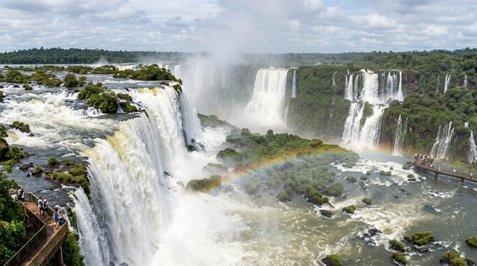
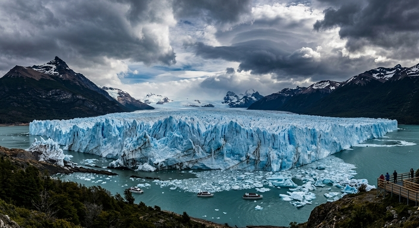
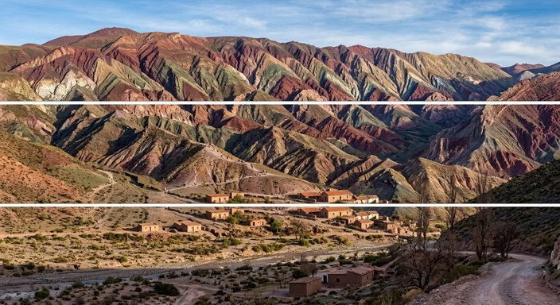

Descubrí el País: Experiencias y Destinos de la Argentina
Viajar por la Argentina es transitar por todos los climas y paisajes imaginables en un solo territorio.
Desde la inmensidad de los hielos eternos hasta el calor de los valles norteños, cada rincón invita a
vivir aventuras inolvidables, conectar con la naturaleza y sumergirse en la calidez de su gente.
Rutas y Destinos Imperdibles: El Mapa Turístico
-La Magia del Fin del Mundo (Patagonia): Un recorrido obligado por los imponentes glaciares como el
Perito Moreno, los picos graníticos del Parque Nacional Los Glaciares en El Chaltén y los paisajes
de ensueño en Bariloche, ideales tanto para el trekking como para el descanso.
-El Norte Andino y sus Colores: Una tierra de tradiciones ancestrales, cardones gigantes y
formaciones geológicas asombrosas, donde destacan la Quebrada de Humahuaca, las salinas y los valles
vitivinícolas de Salta y Jujuy.
-Maravillas del Litoral: El hogar de las Cataratas del Iguazú, una de las Siete Maravillas Naturales
del Mundo, rodeadas por una imponente selva subtropical, además de los tranquilos y vastos Esteros
del Iberá.
-Vinos y Cuyo: El corazón vitivinícola del país con epicentro en Mendoza, donde es posible recorrer
bodegas de nivel internacional al pie del majestuoso Cerro Aconcagua, la cumbre más alta de América.
Famosos Lugares Turisticos
Cataratas del Iguazú

Vista panorámica del conjunto de saltos de las Cataratas del Iguazú en plena selva
misionera
Ubicadas dentro del Parque Nacional Iguazú en la provincia de Misiones, las Cataratas del Iguazú son
una de las Siete Maravillas Naturales del Mundo. Compuestas por 275 saltos de agua rodeados por una
exuberante selva paranaense, ofrecen un espectáculo impresionante donde destaca la majestuosa
Garganta del Diablo, un salto de más de 80 metros de altura que cautiva a visitantes de todo el
planeta.
Glaciar Perito Moreno

El Glaciar Perito Moreno, una de las reservas de agua dulce más importantes del mundo.
Situado en el Parque Nacional Los Glaciares en la provincia de Santa Cruz, el Glaciar Perito Moreno
es una imponente masa de hielo que se extiende sobre las aguas del Lago Argentino. Famoso
mundialmente por su constante avance y sus espectaculares desprendimientos de bloques de hielo, este
coloso de tonos azulados ofrece pasarelas y excursiones de navegación que permiten apreciarlo desde
perspectivas únicas
Quebrada de Humahuaca

Cerro de los Siete Colores en Purmamarca, icono de la Quebrada de Humahuaca.
Declarada Patrimonio Cultural y Natural de la Humanidad por la UNESCO, la Quebrada de Humahuaca es un
profundo valle cordillerano ubicado en la provincia de Jujuy. Destaca por sus paisajes de montañas
multicolor, como el célebre Cerro de los Siete Colores en Purmamarca y la Serranía del Hornocal,
combinados con pintorescos pueblos ancestrales que conservan intactas las tradiciones y la riqueza
cultural del norte argentino.